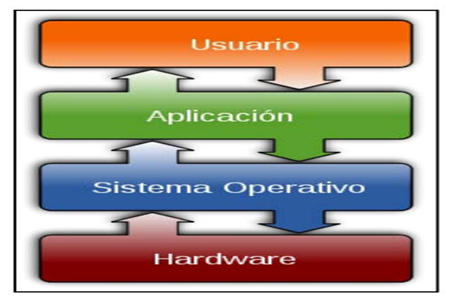

Introduccion
En este trabajo se estudiará el funcionamiento de un joystick y su
conexión con la PC a través de un Driver.
Para ello se investigarán brevemente conceptos básicos de los
movimientos físicos y electrónica de un joystick. Posteriormente, se
analizará el funcionamiento de una computadora, el funcionamiento de
drivers propiamente dicho y la transmisión de datos entre dispositivos y
la computadora.
Conceptos básicos-Joystick
Los Joysticks toman algo enteramente físico -el movimiento de una mano,
el apretar un botón- y lo traducen en algo enteramente matemático -una
cadena de 1 y 0-. El diseño más simple de joystick, usado en los
primeros juegos de consola, es simplemente un switch eléctrico
especializado. Consiste en un palo adosado a una base plástica con una
funda de goma flexible. La placa de circuito está formada por
varios”cables impresos” que se conectan a varios terminales de contacto.
Los cables comunes se extienden desde estos puntos de contacto hasta la
computadora. Los cables impresos forman un circuito eléctrico simple
compuesto por varios circuitos más pequeños. Los circuitos simplemente
transportan electricidad de un punto de contacto a otro. Cuando el
joystick está en posición neutral, cuando no está empujando de una forma
u otra, todos los circuitos individuales menos uno están rotos. El
material conductor en cada cable no se conecta del todo, por lo que el
circuito no puede conducir electricidad. Cada sección rota está cubierta
con un simple botón de plástico que contiene un pequeño disco de metal.
Cuando se mueve la palanca en cualquier dirección, se completa el
circuito: mediante la conexión entre las dos secciones de cable. Cuando
el circuito está cerrado, la electricidad puede fluir por un cable desde
la computadora (o consola de juegos), a través del cable impreso y a
otro cable que conduce de vuelta a la computadora.
-

El diseño más simple de joystick, usado en los primeros juegos de consola, es simplemente un switch eléctrico especializado. Consiste en un palo adosado a una base plástica con una funda de goma flexible. La placa de circuito está formada por varios”cables impresos” que se conectan a varios terminales de contacto. Los cables comunes se extienden desde estos puntos de contacto hasta la computadora.
Los cables impresos forman un circuito eléctrico simple compuesto por varios circuitos más pequeños. Los circuitos simplemente transportan electricidad de un punto de contacto a otro. Cuando el joystick está en posición neutral, cuando no está empujando de una forma u otra, todos los circuitos individuales menos uno están rotos. El material conductor en cada cable no se conecta del todo, por lo que el circuito no puede conducir electricidad.
Cada sección rota está cubierta con un simple botón de plástico que contiene un pequeño disco de metal. Cuando se mueve la palanca en cualquier dirección, se completa el circuito: mediante la conexión entre las dos secciones de cable. Cuando el circuito está cerrado, la electricidad puede fluir por un cable desde la computadora (o consola de juegos), a través del cable impreso y a otro cable que conduce de vuelta a la computadora.
-


-
Usaremos como ejemplo un joystick conectado a una placa Arduino.
En la imagen podemos ver lo siguiente:
Los pines de los cables rojo y negro son los del voltaje.
Los pines blanco, azul y verde son los que transmiten la información del joystick
Blanco: estado del switch (botón).
Azul: eje de las x.
Verde: eje de las y.
CÓMO FUNCIONA UNA PC
Al encender un computadora se carga un pequeño programa escrito en lenguaje ensamblador, la BIOS. Almacenado en una memoria ROM, contiene la configuración de los elementos hardware básicos del PC y se encarga de cargar el sistema operativo en la memoria RAM.
El núcleo actúa de intermediario entre las aplicaciones y el hardware. El núcleo tiene como funciones básicas garantizar la carga y la ejecución de los procesos, las entradas/salidas y proponer una interfaz entre el espacio del núcleo y los programas del espacio del usuario. De esta forma, para que una aplicación sea funcional en un sistema operativo, ésta le tiene que solicitar al núcleo un espacio en memoria y acceso a otros recursos.
Una vez cargados los sistemas operativos actuales, estos cargan a su vez los controladores de periféricos (“Drivers”) no incluidos en el núcleo y las herramientas del sistema operativo, así como otros programas configurados en el inicio. Los conceptos relacionados son:
*Sistema de E/S, el cual consiste en un sistema de almacenamiento temporal (“caché”), una interfaz de controladores de dispositivos y otra interfaz para dispositivos concretos. El sistema operativo debe gestionar el almacenamiento temporal de E/S y servir las interrupciones de los dispositivos de E/S y que estas no interfieran de manera directa con la ejecución del procesador.
*HAL (siglas inglesas de Hardware Abstraction Layer) o Capa de abstracción de hardware es una aplicación que está constantemente funcionando de manera transparente al usuario (“demonio”), que permite a las aplicaciones un fácil acceso a la información sobre el hardware, de manera que puedan localizar y utilizar tal hardware independientemente del tipo de bus o dispositivo. De esta manera una Interfaz gráfica de usuario puede presentar a su usuario todos los recursos de una manera uniforme y completa
